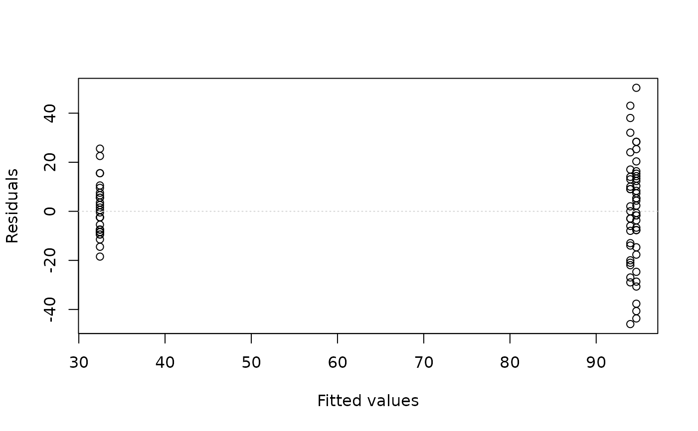
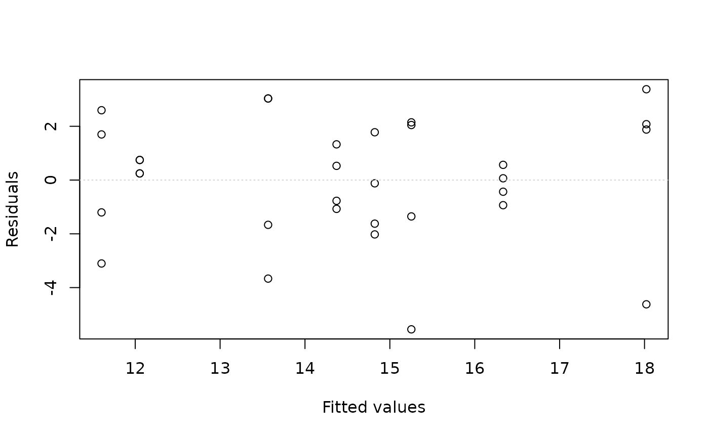
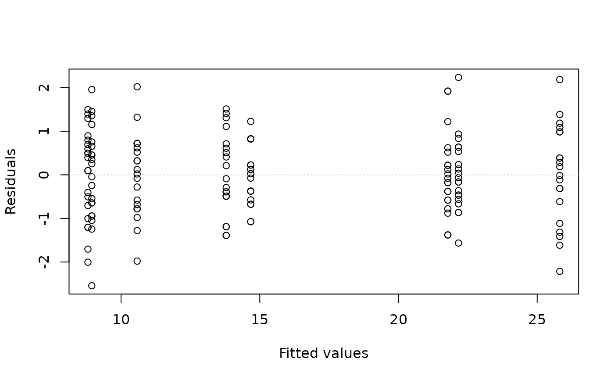
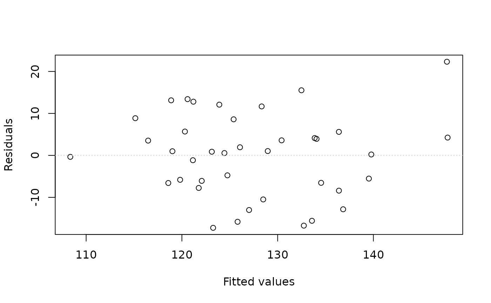
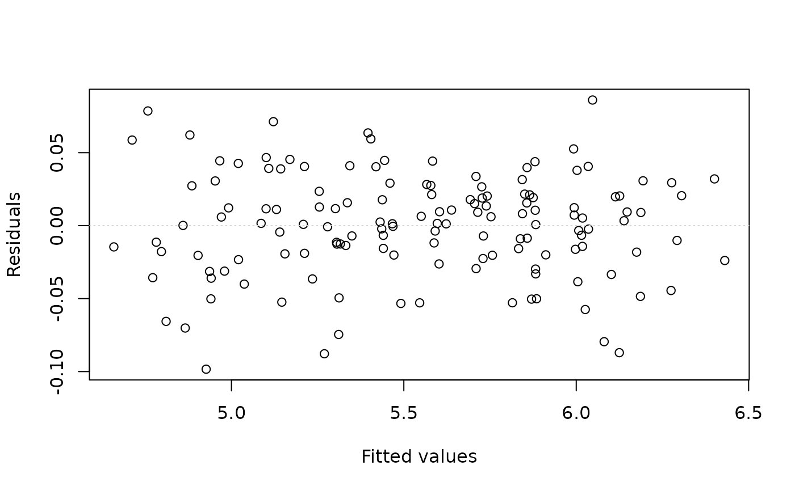
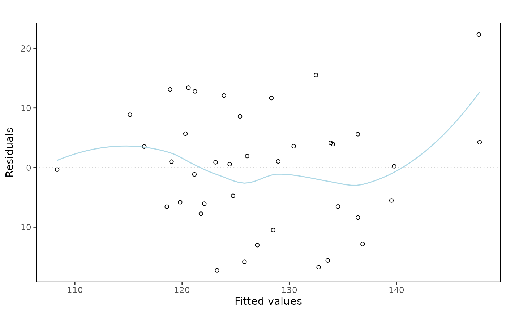
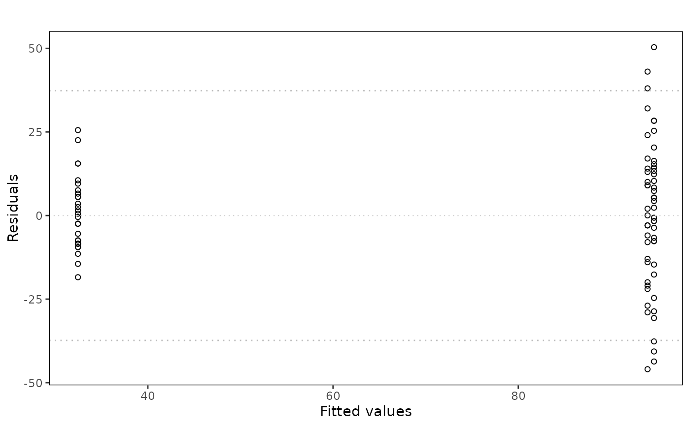

Plots the residuals versus the fitted (or predicted) values from a linear model. A horizontal line is drawn at y = 0, reflecting the fact that we expect the residuals to have a mean of zero. An optional lowess line is drawn if smoother is set to TRUE. This can be useful in determining whether a trend still exists in the residuals. An optional pair of lines is drawn at +/- 2 times the standard deviation of the residuals - which is estimated from the Residual Mean Sqare (Within group mean square = WGMS). This can be useful in highlighting potential outliers.
Usage
eovcheck(x, ...)
# S3 method for class 'formula'
eovcheck(
x,
data = NULL,
xlab = "Fitted values",
ylab = "Residuals",
col = NULL,
smoother = FALSE,
twosd = FALSE,
engine = c("base", "ggplot2"),
...
)
# S3 method for class 'lm'
eovcheck(
x,
smoother = FALSE,
twosd = FALSE,
engine = c("base", "ggplot2"),
...
)Arguments
- x
A linear model formula. Alternatively, a fitted lm object from a linear model.
- ...
Optional arguments passed to the base plotting engine. Extra arguments are currently ignored by the ggplot2 engine.
- data
A data frame in which to evaluate the formula.
- xlab
a title for the x axis: see
title.- ylab
a title for the y axis: see
title.- col
a colour for the lowess smoother line.
- smoother
if TRUE then a smoothed lowess line will be added to the plot
- twosd
if
TRUEthen horizontal dotted lines will be drawn at +/-2sd- engine
plotting engine to use. The default,
"base", preserves the original base graphics output. Use"ggplot2"for a ggplot2 object.
Value
Draws the residual-versus-fitted diagnostic plot when using the base
engine. With engine = "ggplot2", returns a ggplot object.
Details
The default base graphics engine preserves the original teaching plot and draws directly on the active graphics device. The ggplot2 engine is intended for users who want a reusable plot object for reports or further customisation, and returns a ggplot object instead of drawing a base graphics side effect.
Examples
# one way ANOVA - oysters
data(oysters.df)
oyster.fit = lm(Oysters ~ Site, data = oysters.df)
eovcheck(oyster.fit)

# Same model as the previous example, but using eovcheck.formula
data(oysters.df)
eovcheck(Oysters ~ Site, data = oysters.df)
# A two-way model without interaction
data(soyabean.df)
soya.fit = lm(yield ~ planttime + cultivar, data = soyabean.df)
eovcheck(soya.fit)

# A two-way model with interaction
data(arousal.df)
arousal.fit = lm(arousal ~ gender * picture, data = arousal.df)
eovcheck(arousal.fit)

# A regression model
data(peru.df)
peru.fit = lm(BP ~ height + weight + age + years, data = peru.df)
eovcheck(peru.fit)

# A time series model
data(airpass.df)
t = 1:144
month = factor(rep(1:12, 12))
airpass.df = data.frame(passengers = airpass.df$passengers, t = t, month = month)
airpass.fit = lm(log(passengers)[-1] ~ t[-1] + month[-1]
+ log(passengers)[-144], data = airpass.df)
eovcheck(airpass.fit)

# ggplot2 engine for reusable plot objects
eovPlot = eovcheck(oyster.fit, engine = "ggplot2")
class(eovPlot)
#> [1] "ggplot2::ggplot" "ggplot" "ggplot2::gg" "S7_object"
#> [5] "gg"
eovcheck(peru.fit, engine = "ggplot2", smoother = TRUE)
#> `geom_smooth()` using formula = 'y ~ x'

eovcheck(oyster.fit, engine = "ggplot2", twosd = TRUE)
